PCW–Show 1986
Die PCW-Show in London war das Software-Ereignis des Jahres. Besucher und Aussteller waren sich darüber einig. Alle wichtigen britischen und auch amerikanischen Hersteller waren versammelt, um die neuen Produkte, die das Weihnachtsgeschäft 1986 bestimmen sollen, vorzustellen. London wurde für fünf Tage zum Mittelpunkt der großen, weiten Software-Welt.
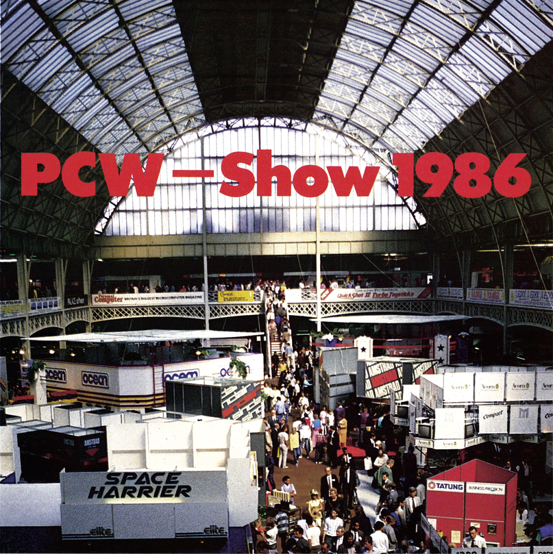
Eine Messe mit vielen Trends und wenig neuen hochinteressanten Produkten, so läßt sich in etwa die diesjährige PCW-Show in London beschreiben.
Die Messe war recht repräsentativ für die britische Computerszene. Es gab nur wenig neue Hardware und überhaupt keine neuen Anwenderprogramme zu sehen. Der größte Teil des öffentlich zugänglichen Messegeländes wurde somit von Spiele-Produzenten belegt. Fast jeder bekannte Name auf dem Spiele-Sektor war vertreten.
Auf der Messe zeigte sich dann allerdings, daß aktuelle Trends den Firmen mehr wert sind als die Entwicklung von neuer Software. So waren mehr als ein Dutzend Spielautomaten zu sehen, die Werbung für Arcade-Umsetzungen machten. Seit die Firma Elite Systems mit Spielen wie »Commando« (in Deutschland »Space Invasion«) und »Bomb Jack« große Verkaufserfolge feiern konnte, hat sich fast die ganze Branche auf Umsetzungen von Spielautomaten »eingeschossen«. Hier ein paar Firmennamen und deren bis Weihnachten geplante Umsetzungen: Elite Systems: »1942«, »Ikari Warriors«, »Commando 86«, »Bomb Jack 2«, »Space Harrier«. Ocean/Imagine: »Galvan«, »Mag Max«, »Terra Cresta«, »Donkey Kong«. U.S.Gold: »Gauntlet«, »Express Raider«, »Breakthru«, »Xevios«, »Crystal Castles«. Electric Dreams: »Tempest«, »Super Sprint«. Melbourne House: »Bazooka Bill«.
Dabei sind leider viele der Spiele inhaltlich absolut identisch und unterscheiden sich meist nur in Hintergrundgrafik und Sprites. Bestes Beispiel hierfür sind drei Spiele von Elite Systems: Bei »1942«, »Ikari Warriors« und »Commando 86« geht es darum, möglichst viele Flugzeuge, Panzer und nicht zuletzt Soldaten abzuschießen. Der einzige Gag bei »Ikari Warriors« und »Commando 86« ist, daß zwei Spieler gleichzeitig die Waffen sprechen lassen dürfen. Diese Liste ließe sich mit weiteren Spielen beliebig fortsetzen.
Daß der Markt damit voll gesättigt ist und sich sicherlich nicht alle diese Spiele in hohen Stückzahlen verkaufen lassen, stört die Firmen wenig. Jede ist fest davon überzeugt, mit ihren Produkten die absoluten Weihnachtshits zu haben.
Leider waren nur wenige der Spielhallen-Umsetzungen wirklich zu sehen, denn viele Firmen beschränkten sich darauf, dem Publikum den grafisch natürlich wesentlich eindrucksvolleren Automaten zu präsentieren. Da ließ sogar so mancher Geschäftsmann die Aktentasche stehen, um ein Spielchen zu riskieren. Zu den wenigen Programmen, die es schon in der C 64-Version zu sehen gab, gehört »Paperboy« von Elite Systems (Bild 1).
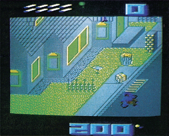
Zusammenfassend kann man sagen, daß das Spielautomaten-Fieber im diesjährigen Weihnachtsgeschäft voll zuschlagen wird. Es bleibt allerdings die Frage offen, ob die Softwarekäufer bereit sind, sich mit all diesen Spielen einzudecken oder lieber auf einfallsreichere Produkte umsteigen.
Von der Leinwand zum Computer-Monitor
Ein weiterer Trend der letzten Monate hat auf der Messe seinen absoluten Höhepunkt erreicht: Die Umsetzung von Kinofilmen und Fernsehserien in Computerspiele. Auch hier eine kleine Liste: Ocean: »Cobra«, »Highlander«, »Short Circuit« (»Nummer 5 lebt!«), »Top Gun«, »It's a Knockout« (»Spiel ohne Grenzen«), »Street Hawk«. Electric Dreams: »Aliens«, »Big Trouble in little China«. Activision: »Howard the Duck«, »Labyrinth«, »Transformers«. Piranha: »Nosferatu«. Beyond: »Star Trek« (»Raumschiff Enterprise«). Mastertronic: »Flash Gordon«. Melbourne House: »Asterix and the Magic Cauldron«.
Auch für diesen Bereich galt weitgehend: Viel Promotion, aber keine Spiele. So hatte Beyond für das Star-Trek-Spiel seinen Messestand wie die Brücke der Enterprise gestaltet. Zu sehen gab es einige tolle Grafikdemos von einem Videoband. Diese Demos stammten aber von der Atari ST-Version. Somit kann augenblicklich niemand sagen, wie Star Trek auf den C 64 umgesetzt wird. Ähnlich spektakulär ging es bei Electric Dreams zu, die mit zwei finsteren Statisten und Original-Modellen aus dem Film Reklame für »Aliens« machten (Bild 2). Auch hier gab es vom Spiel nichts zu sehen. Bei fast allen anderen angekündigten Umsetzungen mußte man sich mit Film-Trailern vom Videoband oder sogar nur mit Plakaten begnügen.
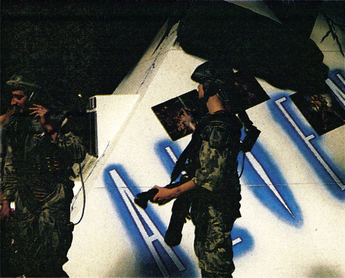
Aber auch wer nach neuen Produkten suchte, die nicht aus Spielhallen oder Kinos stammen, konnte fündig werden. Wer zum Beispiel Liebhaber gepflegter Adventures ist, dürfte sich für die C 64-Version des Atari ST-Renners »The Pawn« interessieren, die bei Rainbird zu sehen war. The Pawn ist ein illustriertes Textadventure. Die insgesamt 30 Bilder sind also nicht zur Lösung des Adventures notwendig. Diese Bilder sind allerdings mit Abstand die besten, die je in einem Adventure verwendet wurden. Ein Beispiel zeigt Bild 3. Bei The Pawn mußten zahlreiche Programmiertricks angewandt werden, um das komplexe Spiel auf den C 64 zu übertragen. So wird der Prozessor in dem 1541-Laufwerk für bestimmte Aufgaben als Zweit-Prozessor benutzt. Er entschlüsselt beispielsweise die auf der Diskette stark gepackten Texte. Der Nachfolger zu The Pawn namens »The Guild of Thieves« wird wahrscheinlich im nächsten Frühjahr folgen.
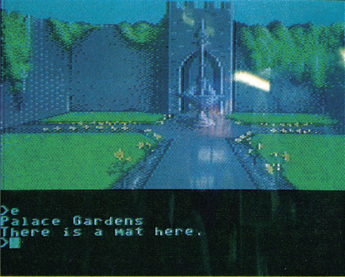
Weitere Adventures von Rainbird werden von Level 9, einem renommierten englischen Programmierteam, entwickelt. Deren interessanteste Neuerscheinung wird wohl »Knight Orc« sein, bei dem endlich mal die Rollen vertauscht werden: Der Spieler übernimmt die Rolle eines Orc, eines der Monster, die in vielen Adventures gekillt werden. Dieser Orc muß sich nun gegen viele eben dieser Adventure-Spieler ums Überleben kämpfen.
Auch von Infocom wurden neue Produkte vorgeführt. Die Tests zu »Trinity« und »Leather Goddesses of Phobos« finden Sie schon in dieser Ausgabe. Brandneu hingegen ist »Moonmist«, ein Krimi-Adventure mit Grusel-Atmosphäre, das etwas einfacher als die normalen Infocom-Spiele ist und Einsteigern Infocom-Spiele schmackhaft machen soll. Moonmist wird es auch für den C 64 geben.
Weitere Adventures kommen von Activision. Gezeigt wurden: »Tass Times in Tonetown«, ein Spiel um verrückte Lebensart in einer anderen Dimension und »Chicago«, ein Spiel um Prohibition und Verbrechen im Amerika der dreißiger Jahre.
Von den Adventures zum gehobenen Action-Spiel: Bei Hewson stellte Andrew Braybrook, Autor der vielbeachteten Spiele »Paradroid« und »Uridium«, sein neuestes Werk namens »Alleykat« vor. Alleykat (Bild 4) ist ein Weltraumrennen mit vielen neuen Ideen. Da Andrew Braybrook beim Programmieren völlig freie Hand hatte und den C 64 bis auf's letzte ausnutzen durfte, hat Alleykat eine Menge spektakulärer grafik-technischer Tricks. Außerdem paßt sich Alleykat automatisch an einen C 128 an und nutzt dort die Möglichkeit aus, mit 2 MHz zu arbeiten.
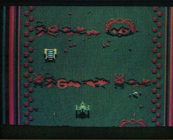
Daß Programmierer die Möglichkeiten eines Computers voll ausschöpfen dürfen, ist in England nicht üblich, denn meistens sollen die Spiele auch auf Schneider- und Spectrum-Computer umsetzbar sein. Diese Geräte tun sich aber mit vielen Commodore-Spezialitäten wie Rasterinterrupts und Hardwaresprites sehr schwer. Somit sind die wenigen Commodore-spezifischen Programme meist auch die besten.
Ein Action-Adventure mit besonders guter Grafik und Animation wurde von Palace Software vorgestellt. »The Sacred Armour of Antiriad« (Bild 5) versetzt den Spieler in die Rolle eines Menschen nach dem Atomkrieg, der eine geheimnisvolle Rüstung finden muß, um sich gegen außerirdische Eindringlinge zur Wehr zu setzen.
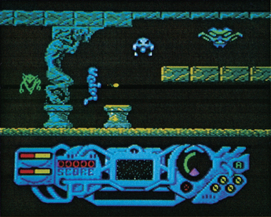
Wer ein Spiel sucht, an dem sich die ganze Familie beteiligen kann, dürfte mit »Trivial Pursuit« (Bild 6) von Domark zufrieden sein. Die Umsetzung des bekannten Brettspiels auf den Computer ist sehr gut gelungen. Wer das Brettspiel nicht kennt: Bei Trivial Pursuit geht es darum, möglichst viele Fragen richtig zu beantworten, um so dem Zielfeld näher zu rücken. Die Fragen sind dabei wirklich trivial und haben keinen wesentlichen tieferen Sinn: Wieviele Golfbälle liegen auf dem Mond? In welcher Gewerkschaft ist die Königin-Mutter von England Mitglied? Weitere Fragen beschäftigen sich mit Musikstücken, die natürlich aus dem Lautsprecher tönen. Ab und zu erscheint auch eine erläuternde Grafik. Mit über 3000 Fragen auf der Diskette oder Kassette ist Trivial Pursuit sicherlich nicht so schnell langweilig. Eine deutsche Version mit auf Deutschland abgestimmten Fragen ist bei Domark in Planung.
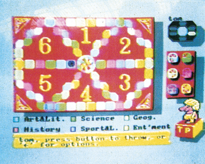
Zum Thema »deutsche Übersetzung« gab es diesmal bei vielen Firmen Positives zu berichten. Im Augenblick ist der deutsche Markt in Europa hinter England die Nummer Zwei. Also werden in Zukunft immer mehr Spiele zumindest mit deutschen Anleitungen erscheinen. Sogar das Übersetzen der Texte, die auf dem Bildschirm zu sehen sind, setzt sich immer mehr durch. So wird es von »Hacker II« (Activision) eine deutsche Version geben, wie auch von »Mercenary« von Novagen Software.
Auch bei Denkspielen darf man mit einigen sehr interessanten Neuerscheinungen rechnen, darunter »Shanghai« von Activision, die Umsetzung eines chinesischen Brettspiels mit verschiedenen Spielvariationen.
Bei der Activision-Tochter Electric Dreams gab es mehrere Produkte zu sehen, unter anderem: »Hijack«, ein Anti-Terror-Strategie-Spiel mit etwas skurillem britischem Humor; »Xarq«, ein Action-Adventure; »Dauntless«, ein Action-Adventure, das an Gauntlet erinnert; »Star Raiders II«, die Fortsetzung des Atari-Bestsellers, bei der man (wieder einmal) ein Planetensystem von fremden Invasoren befreien muß.
Der »British Telcom-Clan«, bestehend aus den Firmen Firebird, Beyond und Odin, hat auch noch einige heiße Eisen im Feuer, darunter zum Beispiel »Cholo«: In ferner Zukunft, nach dem Atomkrieg, heißt das beliebteste Spiel »Rat«, bei dem man einen Roboter durch eine simulierte Stadt namens Cholo steuern und andere Roboter ausschalten muß. Durch geschicktes »hacken« erhält man neue Programme, die wiederum den eigenen Roboter mächtiger machen. Doch bald beginnt die durch den Spieler verkörperte Figur sich zu fragen, ob Rat wirklich nur ein Spiel ist, oder ob man echte Roboter über die strahlenverseuchte Oberfläche der Erde jagt? Die 3D-Vektor-Grafik und die Aufmachung erinnern an den Klassiker »Elite«. So wird bei Cholo auch ein Roman, mehrere Karten und ähnliches Material beiliegen, ohne die das Spiel nicht lösbar ist. Weiterhin bei Firebird demnächst erhältlich: »Druid«, eine weitere Gauntlet-Version, und »Pandora«, ein Action-Adventure, bei dem man ein Generations-Raumschiff untersuchen muß. Bei Beyond stehen »Dante's Inferno« und »Infodroid« auf dem Programm. Bei Inferno muß man versuchen, aus der Hölle zu entfliehen, während Infodroid von den Schwierigkeiten handelt, die ein Roboter-Kurier in ferner Zukunft hat. Odin schließlich arbeitet gerade an »Heartland«, einem geschickt gemachten Action-Adventure, und »Hypa-Ball«, einem Zukunfts-Ballspiel.
Wer schon immer einmal wissen wollte, wie es in einem typischen englischen Pub zugeht, sollte sich mit »Pub Games« von Alligata beschäftigen. Pub Games ist eine Sammlung von insgesamt sechs Kneipen-Spielen, darunter Domino, Billard, Poker und Tischfußball.
Haben Sie in letzter Zeit ein professionelles Spiel geschrieben, das Sie gerne vermarkten möchten? Auf der Messe nahm eine neue Firma namens Digital Angebote für ihr Label »Code Masters« entgegen. Für jedes Spiel, das veröffentlicht wird, werden 2500 Pfund (entspricht knapp 8000 Mark) gezahlt. Außerdem gibt es noch Gewinnbeteiligung, wenn bestimmte Verkaufszahlen überschritten werden. Hinter Code Masters stecken keine Unbekannten: Gegründet wurde die Firma von Richard und David Darling, die vorher für Mastertronic programmierten. Von ihnen stammen beispielsweise »Master of Magic« und »The last V8«. Sie behaupten, bis heute 1,5 Millionen Spiele verkauft zu haben. Eine der ersten Veröffentlichungen ist »BMX Simulator« (Bild 7), ein, für den Preis von unter 15 Mark, hervorragendes Rennspiel für zwei Spieler. Richard und David werden sich alle eingehenden Programme ansehen und selber entscheiden, ob sie es wert sind, veröffentlicht zu werden.
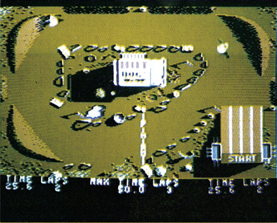
Der amerikanische Produzent Electronic Arts war nur indirekt über Ariolasoft am Stand vertreten und zeigte dort keine neuen Produkte. Im Büro von Ariolasoft durften wir dann aber einen Blick auf drei neue C 64-Programme werfen: Das lange angekündigte »Marble Madness« (Bild 8) ist fast fertiggestellt und soll noch dieses Jahr erscheinen. Das zweite neue Produkt ist »Arcticfox« (Bild 9), ein Kampf gegen böse Außerirdische, die den Sauerstoff der Erde in Methan verwandeln wollen. Das letzte Spiel heißt »Robot Rascals« (Bild 10) und ist ein Kartenspiel mit Computerunterstützung. Jeder Spieler steuert einen Roboter über das Spielfeld und muß bestimmte Gegenstände finden. Die Spielkarten geben an, welche Gegenstände zu suchen sind. Man kann sich gegenseitig Gegenstände klauen, schlechte Karten an andere Spieler weitergeben und natürlich so gut wie möglich bluffen, damit die anderen Spieler nicht wissen, wonach man wirklich sucht. Robot Rascals ist ein Spiel für die ganze Familie.
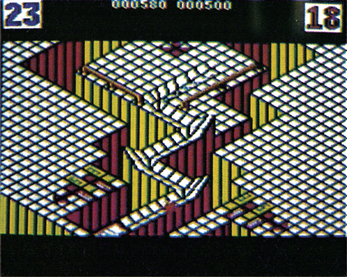
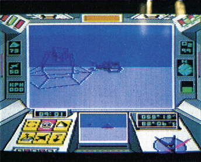
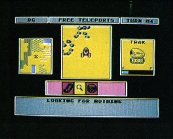
Auf der PCW-Messe wurden Hunderte von neuen Spielprogrammen gezeigt, von denen viele einfach deswegen untergingen, weil sie nichts Neues boten sondern einen Aufguß alter Ideen darstellten. Deswegen haben wir im Messebericht auch versucht, uns auf die wesentlichen Trends und neuen Produkte zu beschränken.
Wie es für den englischen Markt typisch ist, fanden sich nur wenige Hardware-Hersteller auf der Messe ein. Dafür konnte man bei einigen ausstellenden Händlern Restposten von Druckern oder Trackballs zu sehr günstigen Preisen erhalten. Neue Hardware-Entwicklungen beschränkten sich auf Roboterarme für Lernzwecke und neue Joysticks. Die in Deutschland schon zum Standard gehörenden Erweiterungen wie Floppyspeeder und EPROM-Brenner waren in London überhaupt nicht zu finden. Hier zeigten sich wieder die Unterschiede zwischen dem deutschen und englischen Markt. Schwarze Zeiten für die Hardware sind deswegen noch lange nicht zu befürchten, denn viele der interessantesten Entwicklungen auf diesem Gebiet kommen aus Deutschland.
Von Besuchern umlagert war übrigens der C 64C, den es am Stand einer englischen Zeitschrift zu sehen gab. Der C 64C wurde zu dem Zeitpunkt in England noch nicht ausgeliefert.
Commodore selber war als einziger großer Computer-Hersteller nicht im öffentlichen Teil des Messegeländes vertreten, sondern zeigte in einer weiteren Halle den Amiga und seine zahlreichen Anwendungsmöglichkeiten.
Noch im Entwicklungsstadium befindet sich »Scorpio Interactive«, ein System, das Videorecorder und Heimcomputer koppeln soll. Damit wird eine völlig neue Art von Spiel möglich. Eine erste Demonstration unter dem Titel »See me, Hear me, Touch me« wurde auf der Messe hinter verschlossenen Türen nur einzelnen Personen vorgeführt. Der Grund: Es gab Probleme mit dem Copyright an einigen Videoclips, die in dem »Spiel« verwendet wurden. Eine genaue Beschreibung des Scorpio Interactive-Systems zusammen mit einem Kurz-Interview mit Mel Croucher, dem Vater von Scorpio Interactive, können Sie in der nächsten Ausgabe der 64'er finden.
Keine Neuentwicklungen waren auf dem Bereich der Anwendungssoftware zu finden. Englische und amerikanische Firmen meinten uns gegenüber zu diesem Thema, daß es im Augenblick so viel sehr gute Software für den C 64 auf dem Markt gibt, daß sich die Entwicklung des 237sten Textverarbeitungsprogramms finanziell nicht mehr lohnt. Bevor man alte Programme neu aufwärmt, will man lieber an neuen Ideen arbeiten, um neue Käuferschichten zu gewinnen.
Am Ende der Messe waren sich alle Aussteller zumindest in einem einig: Nächstes Jahr wird man mit Sicherheit wiederkommen, denn die PCW-Show hat sich zur wichtigsten Heimcomputer-Messe Europas gemausert.
(bs)